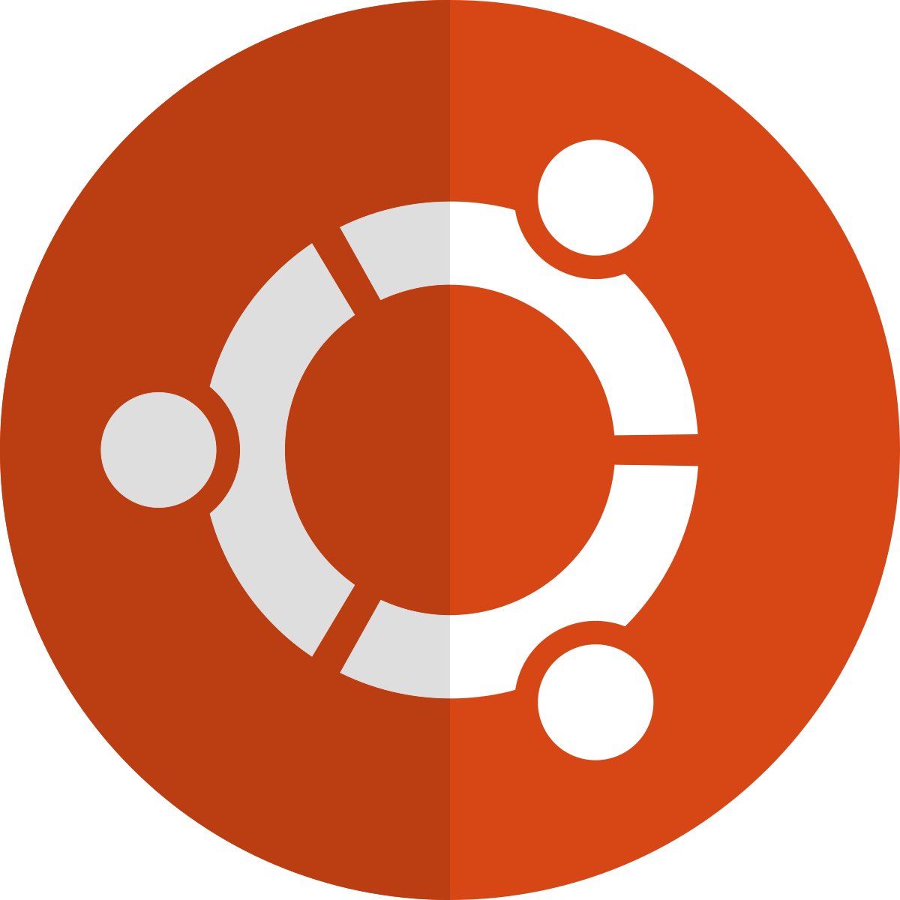

<!DOCTYPE html>
    <html lang="en"></html>
    <html>
        <head>
            <title>Ubuntu туралы ақпарат</title>
            <meta charset="UTF-8">
            <meta name = "author" content = "Nurlan KH">
            <meta name "description" content="Ubuntu туралы ақпарат беретін сайт">
            <meta name="keywords" content="Ubuntu, Linux, Диструбы">
        </head>
        <body>
            <a
                href="./call.html"
                target="_blank">
                <b><p style="text-align: center;">Бұл бетте мен сізге қоңырау шалуды қалаймын!</p></b>
            </a>
            <h1 style="text-align: center;">Linux, Ubuntu диструбы дегеніміз не?</h1>
            <p style="text-align: center;">Әлемге танымал <b>Ubuntu</b> туралы не білеміз?</p>
            </a>

            
            <p><b>Ubuntu</b> (қаз. Убунту; зулу ubuntu-адамшылық) — <b><i>Linux</i></b> ядросын қолданатын және Debian-ға негізделген операциялық жүйе. Негізгі жасаушысы және демеушісі Canonical компаниясы болып табылады. Қазіргі уақытта жоба белсенді түрде дамуда және ашық бірлестік тарапынан қолдау көруде.

            <b>Ubuntu</b>-ды 20 миллионнан астам қолданушы пайдаланады, бұл оны Openstat санақ ғылымы бойынша десктоптарға арналған Linux-тың ең танымал таратушысы етеді. Веб-серверлерге арналған ең танымал ОЖ-дің тізімінде ол 4-орында тұр.

            Әдетте дистрибутивтің жаңа нұсқасы әрбір жарты жыл сайын шығады және оған бір жарым жыл бойы қауіпсіздік жаңаруларымен қолдау көрсетіледі, ал 2 жылда бір рет шығатын LTS нұсқасына 3 жыл бойы көмек көрсетіледі (серверлік нұсқасы-5 жыл бойы). Сонымен қатар енді LTS -тың келесі шығарылымдарына нұсқаға тәуелсіз 5 жыл бойы қолдау көрсетілетіні туралы хабарланды. </p>
            <em></em>    
            
                <em><h1>Бұл <b>Ubuntu</b> қолданушысы - <b>Нұрлан.</b></h1>
                <p>Мен осы сіз көріп отырған сайтты жасаушы баламын. Жалпы өзім қолданатын <b>Ubuntu</b> жайлы айтайын.
                Жалпы мен неге бұл диструбқа өтті деп ойлаған боларсыздар... Иә Windows та жақсы программа бірақ менде қателер туындағандықтан мен Linux қа өтуге қызықтым және оны көштім! Бұл программа маған өте қатты ұнады өйткен оның костимизация өте керемет! Және программист болам деушілерге қолайлы жүйелік программа.
                Мен <b>24.04.3 LTS</b> версиясын қолданамын. Бұл ең соңғы версиялардың бірі. Және 9 жылға <b>тұрақты</b> болып табылады.</p>
            <!-- менің ютуб каналым --></em>
            <a
                href="https://www.youtube.com/@KH.Nurlan"
                target="_blank">
                <b><p style="text-align: center;">Менің YouTube арнама кіріп, қосылыңыздар!</p></b>
            </a>
        </body>
    </html> 